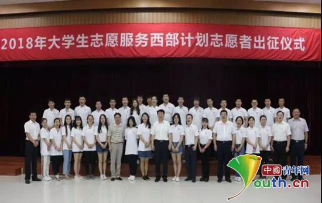

2018年西部计划志愿者出征仪式在京举行
桂电志愿者网 日期：2018-07-23 来源：中国青年网
中国青年网北京7月23日电（记者李川）7月19日下午，全国大学生志愿服务西部计划项目管理办公室、团中央青年志愿者行动指导中心、北京团市委、全国铁道团委在北京举行2018年大学生志愿服务西部计划志愿者出征仪式。团中央书记处书记奇巴图和相关单位负责同志，为即将奔赴西部各省开展志愿服务的北京地区西部计划志愿者代表送行。
2018年大学生志愿服务西部计划志愿者出征仪式在北京举行。
奇巴图同志代表团中央书记处向18300名2018年西部计划志愿者表示问候和敬意。他指出，西部计划志愿者们胸怀理想，心系祖国，主动到西部去、到基层去、到祖国和人民最需要的地方去，将报国之志转化为报国之行，正在用实际行动践行习近平总书记对青年人的谆谆教诲。他祝福志愿者们平安、健康、快乐、充实地工作和生活，留下最美好的青春记忆。他希望志愿者们在实践的历练中进一步感受中国特色社会主义道路的正确和伟大，进一步领悟并践行正确的成长之路，立足岗位，青春建功，为当地的发展作出应有的贡献，更好地弘扬“奉献、友爱、互助、进步”的志愿服务精神。
清华大学刘淙同学、首都师范大学韩九州同学、中国人民公安大学李昂霖同学作为2018年西部计划志愿者代表作了交流发言。与会领导为志愿者代表授旗，全体志愿者庄严宣誓。

团中央书记处书记奇巴图和相关单位负责同志与参加出征仪式的2018年西部计划志愿者合影。
据悉，2018年大学生志愿服务西部计划全国项目实施规模为18300人，共有来自2042所高校的8.4万余名高校毕业生报名参加西部计划。经过审核、选拔、体检等程序，新招募的志愿者们将陆续奔赴西部各省，在基础教育、服务三农、医疗卫生、基层青年工作、基层社会管理等领域开展1-3年的志愿服务。近日，四川、贵州、山东、广东等地开展了形式多样的西部计划志愿者出征仪式。
【责任编辑：李彦龙】